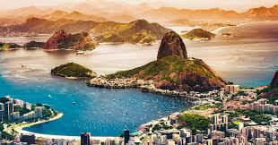

Rio de Janeiro (RJ) - A Cidade Maravilhosa
Onde a montanha encontra o mar e o samba dita o ritmo. O Rio de Janeiro é famoso pelos seus cartões-postais icónicos, praias vibrantes e energia inigualável.
🍽️ Descubra a Gastronomia Carioca
...

Principais Pontos Turísticos
- Cristo Redentor: Uma das Sete Maravilhas do Mundo Moderno, no topo do Corcovado.
- Pão de Açúcar: Passeio imperdível de teleférico com vista para a Baía de Guanabara.
- Praias de Copacabana e Ipanema: Aproveite o sol, o mar e o calçadão mais famoso do Brasil.
- Jardim Botânico: Natureza exuberante, orquidários e palmeiras imperiais imponentes.